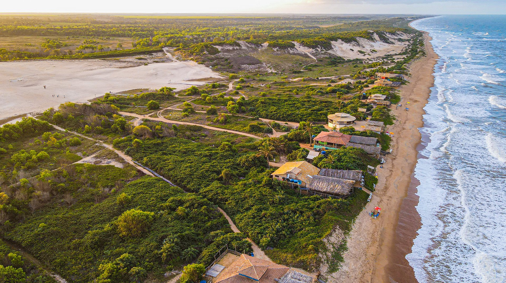
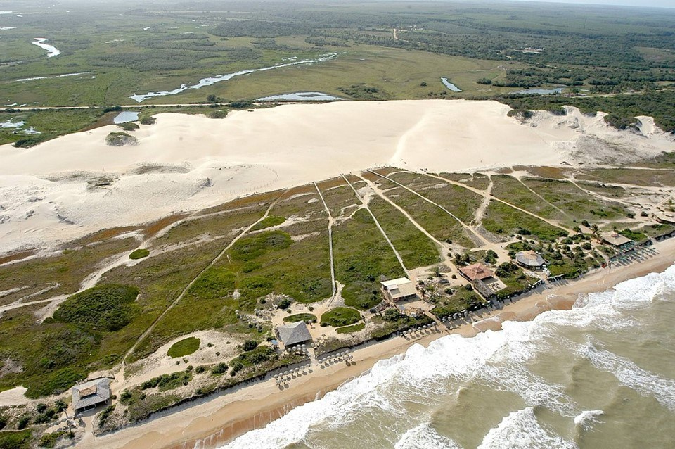

História da Vila
A Vila de Itaúnas surgiu por volta do século XVIII com a vinda de colonos portugueses (vindas casionadas pelo aumento na exploração de minérios que se expandia para o que conhecemos hoje como estado de Minas Gerais) que, nesse século, passariam a expandir as áreas de colonização no Brasil.
Naquele tempo, o povo que se assentava na Vila de Itaúnas, criava porcos em quantidade e, para alimentá-los, a mandioca era o alimento principal, que por sua vez, era matéria-prima da farinha saborosa, tão apreciada pelos baianos e por todos os que possuem paladar mais rústico, ao mesmo tempo apurado. Costume indígena, lidar com a mandioca para esse povo era comum, pois em seu passado genético, corre nas veias o sangue dos índios que brotaram da nossa terra Brasil e dos negros sofridos que pra cá foram trazidos.
Auxiliando o comércio dessa vila, tinha também a pitoresca passagem da madeira, que amarrada umas as outras, em balsas de até 300m, escorregavam pelo rio afora, desde o Império em Pedro Canário, guiadas pelos balseiros até chegar ao Paiol em Conceição da Barra.
Madeira essa que sabem muitos, fruto do desmatamento indiscriminado que assolava o norte do Espírito Santo. Para muitos, fontes de riqueza rápida, para outros que agora vivem lá, fonte de miséria e sofrimento derivado da seca, causada pelas chuvas escassas e mal distribuídas ao longo do ano.
Entre esses encontravam-se os irmãos Reuter que por desconhecimento das consequências, tinham na madeira a única fonte de renda. Através deles pode-se confirmar e acrescentar dados a essa história, tentando entender como tudo acontecera.

A madeira de primeira vinha em caminhões, as outras, menos nobres pra época, desciam rio abaixo, barateando o custo do transporte. Parte da madeira ia para o Rio através de navio, outra parte era comprada pela família Donato, proprietária da CIMBARRA.
Assim, a riqueza da mata gerou o desmatamento, mas também o (pouco) desenvolvimento da região. Tudo isso confirmado por arquivo da família e depoimentos colhidos.
Há muitos anos, a vila possuía uma pequena faixa de mata que a separava do mar. Era essa vegetação que segurava o avanço do lençol de areia, que se movimenta constantemente com a ação do vento Noroeste, muito comum no norte do Espírito Santo. Com a derrubada dessa faixa de mata, entre as décadas de 1950 e 1970, a areia avançou sobre a antiga vila, soterrando-a. Hoje restam apenas algumas ruínas, que podem ser observadas de tempos em tempos, quando a areia as descobre.
Enquanto a vila era encoberta pela ação da natureza, a prefeitura de Conceição da Barra adquiriu terras do outro lado do rio, pertencentes a Teófilo Cabral da Silva. Ali, foi erguida a nova vila, que lá se encontra até hoje.
A Vila de Itaúnas é um local extremamente bucólico, com ruas de barro e casas simples, mas muito conservadas. Há iluminação pública e água tratada e encanada. O povo é hospitaleiro e receptivo, sendo bastante comum se deparar com "nativos" ensinando passos de forró a turistas de todo o mundo, especialmente na alta temporada (partes de dezembro e fevereiro, e os meses de janeiro e julho).
